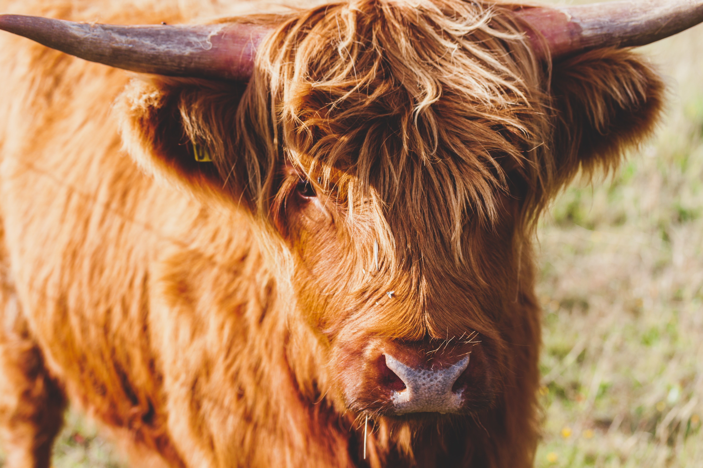

Taurus
EARTH SIGN
SYMBOL : THE BULL

Dear Taurus,
I love how grounded you guys are. A Taurus is super ambitious, and can be very goal-oriented. They are very hard-working, and hold the gift of prolong focus. Yet that doesn't mean they aren't emotional.They are very loving towards people, and are out-going as well. The bad trait of a Taurus is that they can be very stingy people. On the other hand, a Taurus can be very reliable and responsible, making them possess the potential of a great leader or the head of a family.Great examples of Tauruses include Mark Zuckerberg, Dwayne Johnson,Adele and Queen Elizabeth the 2nd.
Zodiac Signs Homepage
Gemini